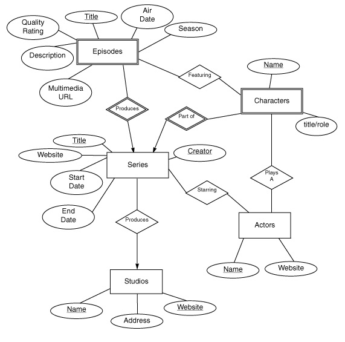
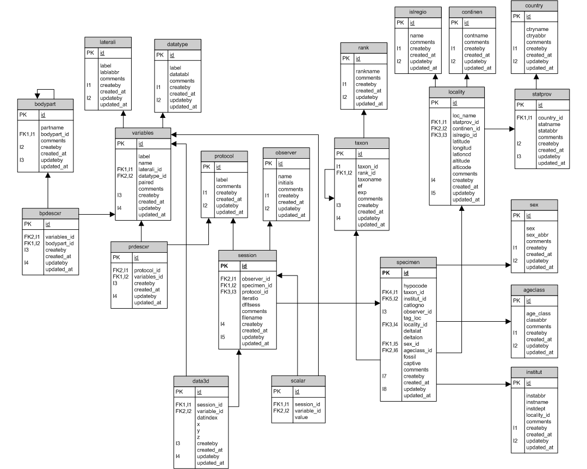

Topics: Accessing Data: SQL
Today's lab focuses the most common database language, the Strutured Query Language (SQL). While we can access a database using only Python commands, it is useful to see the results in a graphical interface. A simple implementation of SQL database is sqlitebrowser. You can download it from:
http://sqlitebrowser.org
After you download it, you should be able to launch it directly by clicking on the 3 stacked circles. If you get a warning on a Mac, click on it while holding down the Control Key, and then choose "Open" from the menu.
sqlite is accepts SQL queries and commands but does not support server access (i.e. remote access from other machines). If you need this, a popular (and also free) option is mysql.
Many databases are "relational databases", meaning that the information is arranged around "relations" (tables) of data. This structure was introduced in 1970 by E.F. Codd at IBM, can be implemented very efficiently, and is very popular. Almost all relational databases can be accessed via the Structured Query Language (SQL).
Let's set up a simple database to demonstrate relations. Our first database will hold information about people and where they live.
After you have entered in the names, click on "Write Changes" to save your entries.
Note: for larger amounts of data, there is an option to load in CSV files.
Once information is stored in a database, SQL allows "queries" (formatted questions) that return data. The simplest queries are of the form:
SELECT * FROM inhabits;To run this in sqlitebrowser, click "Execute SQL" from the second row of buttons. In the top text box, type the query above. When complete, click on the blue triangular run button (third row). In the lower box, you will see all elements ("*" is a wildcard that matches everything) from the table inhabits.
If you are only interested in certain attributes, say just the last names and cities, you can select only those:
SELECT LastName, CityName FROM inhabits;How would you just print out names and ages of the inhabitants?
You can also put conditions on which records (rows) you return, using the WHERE clause. For example, instead of printing out all inhabitants, let's print out the names of those under 70 years of age: SELECT LastName, FirstName FROM inhabits WHERE age < 70; SQL allows more complicated WHERE clauses. Almost all comparison operations as Python except SQL uses a single = for equality and < > for not equals.
So far, everything we've done so far can be done in Excel, so, why use a relational database? The answer comes in the use of tables to efficiently store information.
When we stored the information into our table inhabits, we ended up with much information duplicated. For example, the populations and coordinates for each city occur multiple times. If we needed to update the population of New York City, we would then need to do so in every single row for that city. To avoid such redundancy, information is split into smaller tables and linked where needed. For example, we could create a table with attributes:
Cities(CityName, Population, Latitude, Longitude)to hold the city-specific information.
Another table could hold information about people:
People(FirstName, LastName, Age)
And our last table links the two together:
Inhabits(FirstName, LastName, CityName)
Now, the Inhabits table would have just 3 entries in each row (FirstName, LastName, City Name), and if we needed more information about the person or the city, we could look those up in the other two tables.
Let's create a new database to use three tables, instead of just one large one:
We now have three tables that stored the information of the first one.
This avoids the repetition of storing data (e.g. the latitude, longitude, and population) in the entry for every person. Instead, we stored just enough information (in this case, the city's name) to be able to look up the additional data about a city, if needed. Similarly, the inhabits table keeps just enough information (e.g. first and last names) to be able to locate the additional information about people. An attribute that uniquely identifies a row in the table is called a
Databases are often presented as the table names and attributes. Our small database has the database schema:
cities(CityName, Population, Latitude, Longitude)
inhabits(FirstName, LastName, CityName)
people(FirstName, LastName, Age)
A simple way to link data across multiple tables is using the WHERE clause.
In the clause, we align rows of the tables by common attributes. For example:
select Age, CityName from people, inhabits
where people.FirstName = inhabits.FirstName;
Above, since the same attribute name occurs in multiple tables, we specify which table to by using the table name as a prefix (e.g. people.FirstName).
What happens if you leave off the where clause? Why?
Entity/Relationship (E/R) diagrams are often used to represent visually the organization of the database. The notation is:

Note that each box corresponds to a table (Episodes, Series, etc). When implementing this in a database all the diamonds (relationships) are also implemented by tables, much as we did with the inhabits table in our simple database above.
And a more complicated one for fossils. It is machine generated by the database management system used and represents tables by boxes and includes attributes inside each box:

This lab is just a small introduction to using SQL. There are many more features to the language that we cannot address here. A nice introduction is available at Khan Academy.
While we accessed the database directly via the sqlitebrowser, most access is indirect via programs that query and modify the database. Programs (in Python, JavaScript, or other language) are used to format the SQL commands and then query the database. The responses are then processed in Python (or other language).
For each lab, you should submit a lab report by the target date to: kstjohn AT amnh DOT org. The reports should be about a page for the first labs and contain the following:
Target Date: 27 April 2016
Title: Lab 12:
Name & Email:
Purpose: Give summary of what was done in this lab.
Procedure: Describe step-by-step what you did (include programs or program outlines).
Results: If applicable, show all data collected. Including screen shots is fine (can capture via the Grab program).
Discussion: Give a short explanation and interpretation of your results here.
This course will use the on-line Rosalind system for submitting programs electronically. The password for the course has been sent to your email. Before leaving lab today, complete the first two challenges.